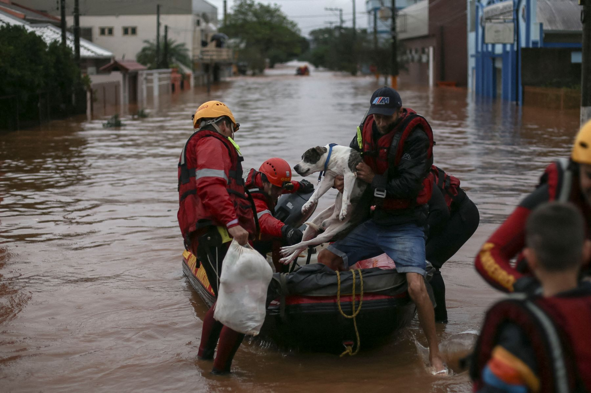
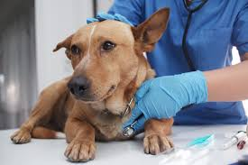
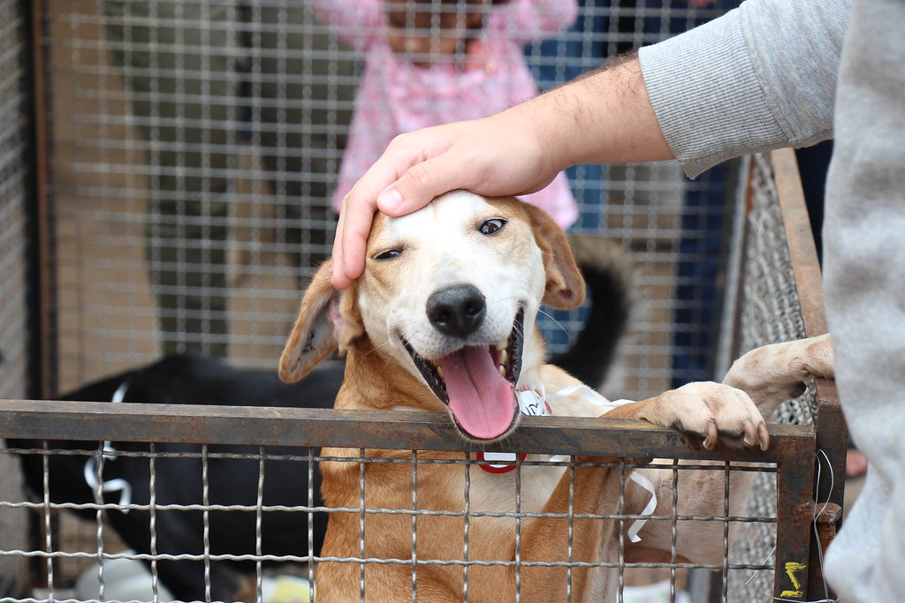
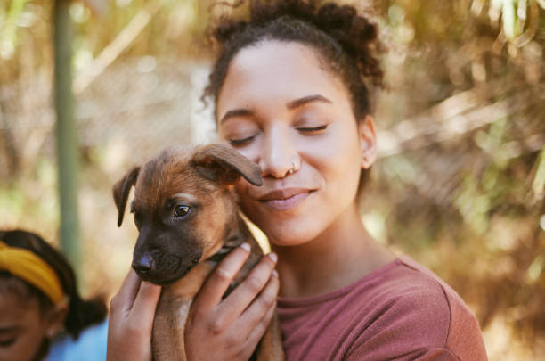
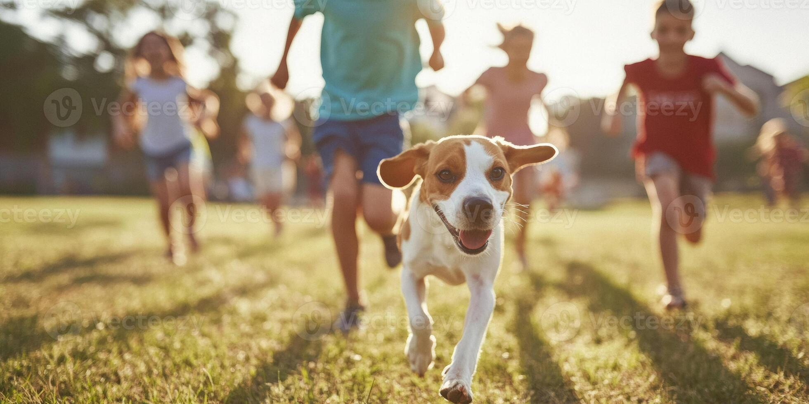

Projetos e ações
A Anjos de pelo desenvolve diversos projetos voltados para o bem-estar e a proteção animal. Conheça alguns de nossos principais projetos:
1. Projeto de Resgate
Nosso projeto de resgate atua 24 horas por dia, 7 dias por semana, para salvar animais em situação de risco. Após o resgate, os animais recebem cuidados veterinários, alimentação adequada e são preparados para adoção responsável.
2. Campanha de Castração
Promovemos multirões de castração gratuita em parceria com a prefeitura e voluntários, ajudando a reduzir o número de animais abandonados e melhorando a qualidade de vida dos pets.
3. Feira de Adoção Responsável
Organizamos feiras de adoção responsáveis em diversos locais, onde os animais resgatados podem encontrar famílias amorosas e prontas para oferecer um lar definitivo.
4. Programa de Apadrinhamento
Nosso programa de apadrinhamento permite que pessoas contribuam mensalmente para os cuidados de um animal específico, ajudando a cobrir despesas com alimentação, medicamentos e tratamentos veterinários.
5. Educação e Conscientização
Realizamos palestras, workshops e campanhas educativas em escolas e comunidades para promover a guarda responsável e o respeito aos animais.